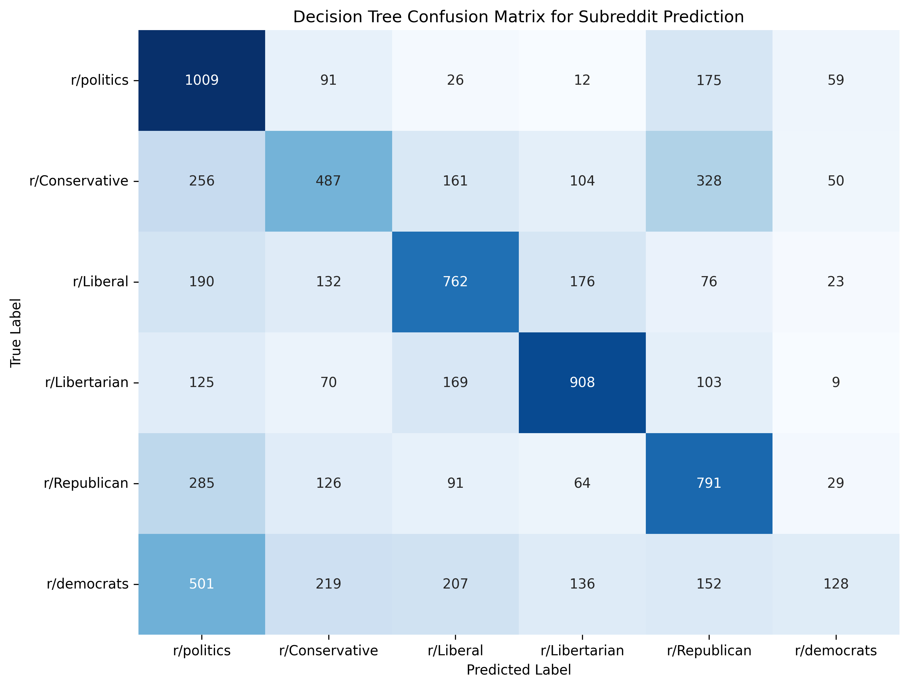
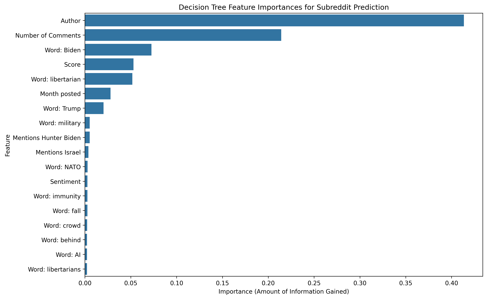
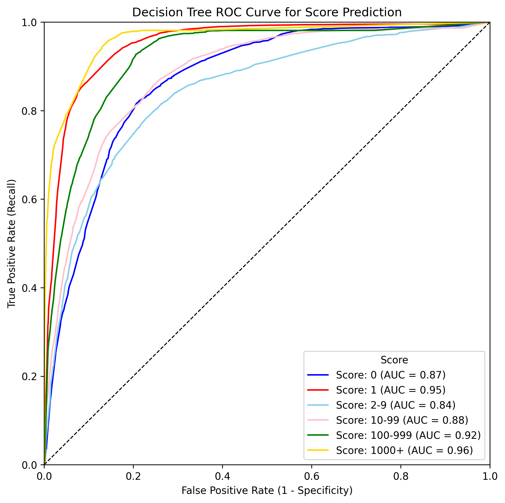
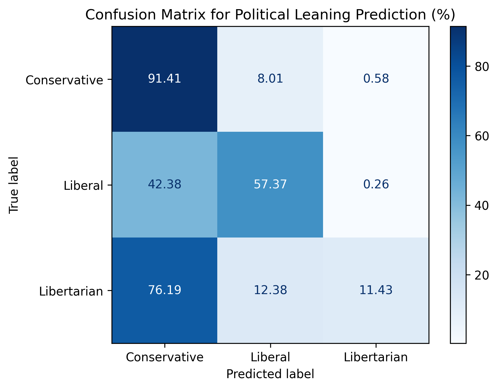
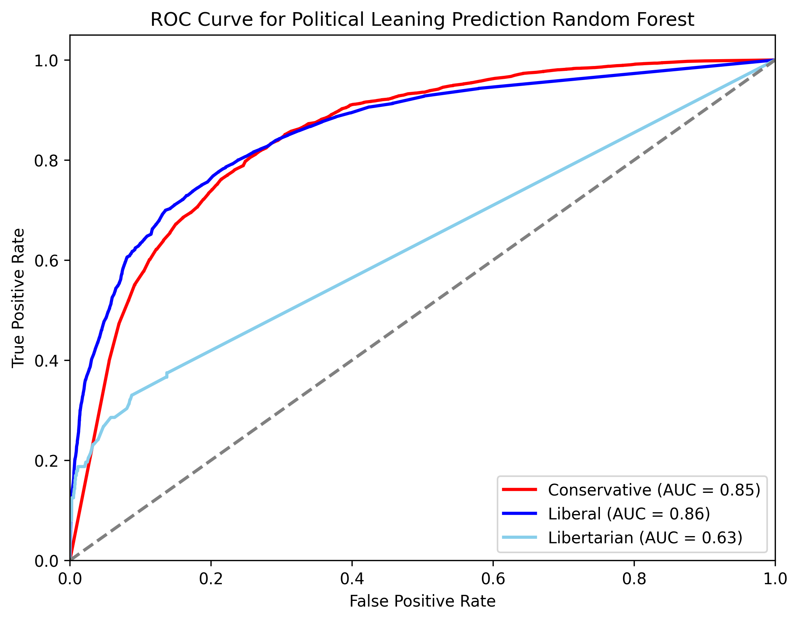
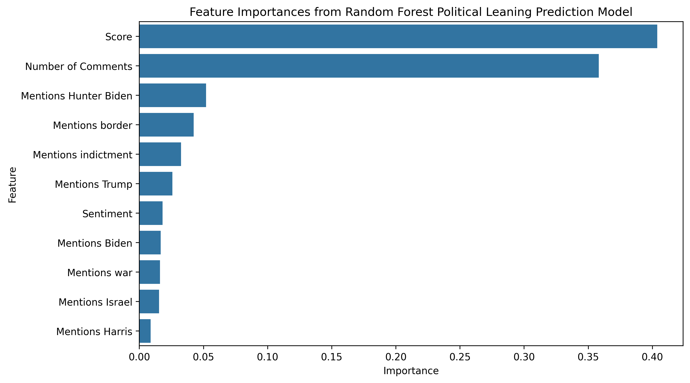
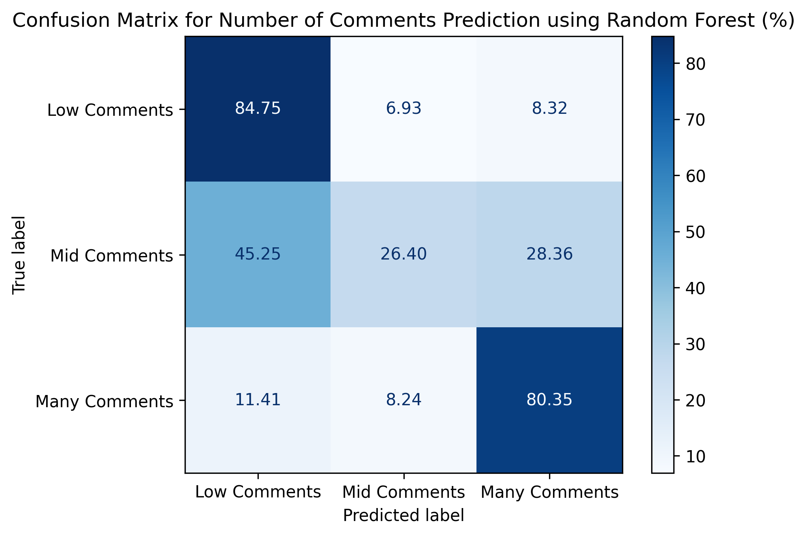
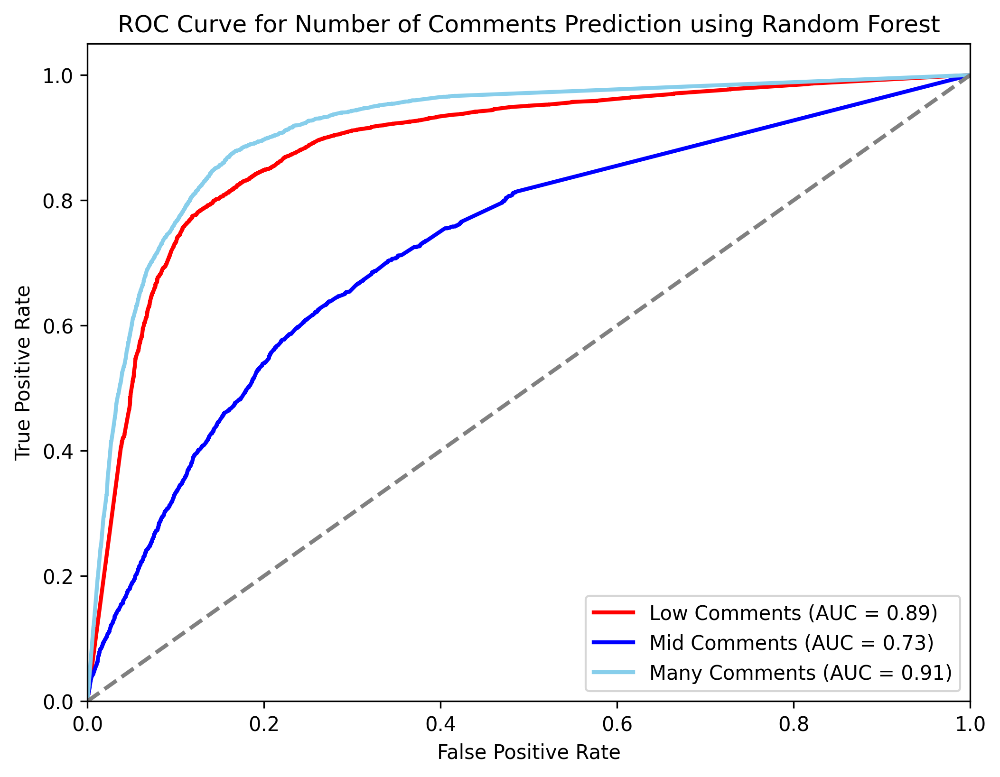
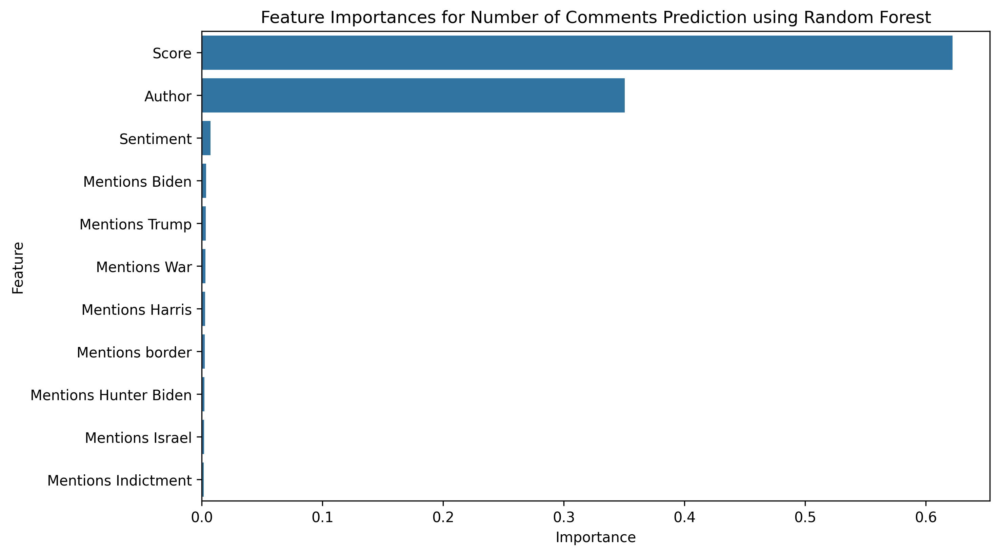

| Machine Learning Results for Predicting Reddit Submission Features | |||||
|---|---|---|---|---|---|
| Summary of the results of the best machine learning models for predicting subreddit, score, political leaning, and number of comments. | |||||
| Best Model | Performance Metrics | ||||
| Accuracy | Precision | Recall | F1 Score | ||
| Subreddit Prediction | Decision Tree | 56.0% | 57.0% | 56.0% | 55.7% |
| Popularity Prediction | Decision Tree | 73.7% | 60.0% | 54.7% | 56.6% |
| Political Leaning Prediction | Random Forest | 83.2% | 58.3% | 54.0% | 55.7% |
| Comment Count Prediction | Random Forest | 76.8% | 64.8% | 64.2% | 64.4% |
Machine Learning
Executive Summary
In this section, we used machine learning to predict the subreddit, popularity, political leaning, and number of comments of submissions in our Reddit dataset. Our goal was to understand how the contents of a submission to Reddit in the political sphere contributes or delineates to its location, popularity (score and comment count), and political leaning. In Table 1, we summarize the results of our machine learning models.
Overall, we see that the subreddit classification task helps us uncover some separability between political subreddits. In particular, we identify separability for r/politics and r/Libertarian, while other subreddits in our analytical set are harder to distinguish. We also identify that the word “Biden” is a key feature for helping distinguish between subreddits, giving us more information about the types of conversations happening on different political subreddits. Through our popularity prediction task using score, we find that modeling is reasonably effective at identifying which posts are likely to become popular and achieve high scores. Our political leaning prediction model shows us that conservative and liberal posts are easy to distinguish, but libertarian posts are more challenging to identify. Finally, the comment count prediction task shows us that the score and author of a post are the most important features in predicting the number of comments a post will receive, and it sets us up for future work to predict the number of comments without using the score feature.
Analytical Report
Predictive statistical modeling is an helpful tool used to uncover patterns in our political data. We used machine learning to better understand the trends present in this Reddit dataset, such as post popularity, political leaning, and post controversiality. In this section, we trained models to predict essential features of the data: subreddit, popularity, political leaning, and controversiality.
Subreddit Prediction from Submission Text
One of our goals was to predict the subreddit of a submission based on its text and other keys features including number of comments, score, and sentiment. Through subreddit prediction, we were able to determine which features were most important in categorizing a submission, and we could see how separable posts were across different subreddits.
To predict the subreddit, we first converted the text to a bag of words representation which was then transformed into a tf-idf matrix. We then combined this matrix with the other features and hypertuned four different classifiers: logistic regression, random forest, decision tree, and naive bayes. Due to the inequity in the number of submissions from each subreddit, we balanced the classes by over/undersampling each class to the median size of the classes. Each model was then trained and hypertuned using k-fold cross validation to identify the best performing hyperparameters for the data.
Overall, the decision tree classifier performed best with an accuracy of 56%. While this is not a high accuracy, it is still better than the most common feature accuracy 17%, meaning we have learned to explain some of the variance in the data. From Figure 1, we see that r/politics and r/Libertarian are the most easily distinguishable subreddits using our model, while r/democrats and r/Conservative are the least distinguishable. Also, we see that r/politics seems to be somewhat representative of a wide range of political ideas based on the misclassifications of other subreddits as r/politics.

Through this modeling exercise, we were able to identify the key features and words that helped distinguish posts from different subreddits in the political sphere. As seen in Figure 2, the most important features in predicting the subreddit of a submission were the author, the number of comments, and the presence of the word “Biden”. Interestingly, the presence of the word “Trump” was not as important in predicting the subreddit of a submission.

The code used for this section is available here.
Predicting Popularity of Posts
To help us understand the influence of posts in the political sphere of Reddit, we decided to build a predictive model to determine the popularity of a post. Popularity is defined as the score, or number of upvotes minus downvotes, that a post receives. Generally, posts with higher scores have more visibility and interaction from users, indicating their influence in the political sphere.
Our team started by training multiple regression models to predict the score of a post based on its text and other key features. However, after getting \(R^2\) values of <0.4, meaning only 40% of the variance in values was explained by the model, we decided to change our approach. We bucketed the scores of posts into logarithmically spaced bins, ranging from a score of 0 to 1,000 and above. The text was then converted TF-IDF using a hashing trick, and we trained four models: logistic regression, random forest, decision tree, and naive bayes. These models were all hypertuned using k-fold cross validation to identify the best performing hyperparameters for the data.
Once again, the decision tree model performed best with an accuracy of 74%. This means that based on a post’s texts and a few other attributes, we can predict it’s popularity about 3 out of 4 times. From the ROC AUC curve in Figure 3, we see that the model is able to predict the popularity of posts with a high degree of accuracy across all classes. The model struggles the most with posts with a small score of 2-9 and excels at posts with a score of 1000 and above.

The code used for this section is available here.
Predicting Political Leaning of Comments and Posts
Another one of our ML goals was to see if we could predict the political party that a submission best fit into. To do this, we created a variable ‘party’ using submissions subreddit. We classified submissions from r/Conservative and r/Republican as being conservative, posts from r/democrats and r/Liberal as being liberal, and posts from r/Libertarian as being libertarian. We then created a feature vector similar to that used previously with information on the content and sentiment of the submission and the submissions text. We then trained a random forest classifier on the data. We were able to achieve an accuracy of ~83%. However, this is less impressive considering the most common feature accuracy is ~77%. Figure 4 shows that the model generally performs well but tends to predict that most submissions are conservative. This is likely due to the fact that the conservative class is the largest class in the data.

The ROC curve in Figure 5 shows that the model performs well for predicting conservative and liberal submissions but struggles with libertarian submissions. This may be because often libertarian submissions are more similar to conservative submissions.

Figure 6 shows the feature importances of the top features in the random forest classifier. We can see from the graph that the number of comments and the score were by far the highest predictors. This was a surprise, given that in the subreddit prediction results we found that the author had the highest feature importance. Another interesting result is that the sentiment score had very little importance on the final result. This may indicate that the sentiment between liberal and conservative subreddits is similar.

The code used for this section is available here.
Predicting Number of Comments
Our last ML goal was to predict the number of comments for any given submission. The number of comments can be seen as a proxy to the controversiality of the post, as more people will weigh in on more controversial topics. We divided our data into three categories containing posts with a large number of comments, posts with a moderate number of comments, and posts with very few or no comments. Like our previous ML experiments, we used a feature vector based on the features in our ML dataframe incuding features like author, is_biden (mentions Biden), is_trump (mentions Trump), score, and the sentiment analysis of the main text among others. We found a random forest model to perform reasonably well, yielding an accuracy of 76%. Given we have three categories this is decent but not extraordinary. As seen in Figure 7, the accuracy for a post having a small number of comments was 84%, while the accuracy for a post having many comments was 78%. The worst categorical accuracy was for a post containing a moderate number of comments, at 27% accuracy.

The ROC curve in Figure 8 similarly shows that the model performs well for predicting posts with a small or large number of comments but struggles with posts with a moderate number of comments.

We were also able to calculate the feature importances of our random forest model. In Figure 9, we can see that the most important features by far are score and author, with score being the most important. Score has a feature importance of 0.603, while author has a feature importance of 0.369. Sentiment is the third most important feature, but it is far from the top two, with a feature importance of 0.007. All of the remaining features are below 0.004 feature importance.

Since score is highly correlated with the number of comments, it is not surprising that it is the most important feature in predicting the number of comments. In future analyses, we will consider removing score from the feature vector to see how well we can predict the number of comments without this feature.
The code used for this section is available here.